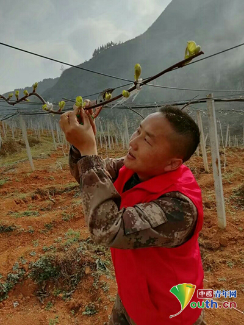
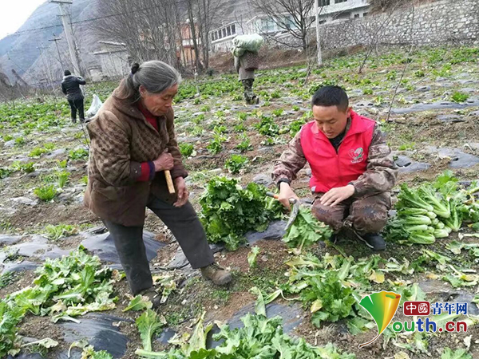
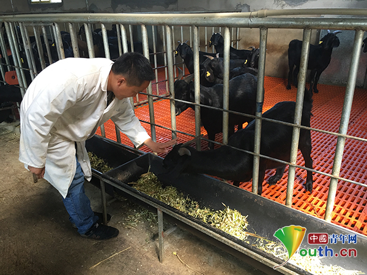

志愿者安文忠：青石缝里抓脱贫 林下地里创新路
桂电志愿者网 日期：2018-04-02 来源：中国青年网

安文忠在果园查看猕猴桃发芽状况。本人供图
在贵州省水城县青林乡，近几年经常有一个年轻的身影穿梭在各个田间地头，割菜、装袋、搬运，手上的活儿一刻都没有停下，他就是来自贵州铜仁职业技术学院的西部计划志愿者安文忠。
2015年7月30日，伴随着“到西部去、到基层去，到祖国和人民最需要的地方去”的青春旋律，25岁的安文忠来到了青林乡这块陌生的土地参加志愿服务。在两年多的服务时间里，他努力发挥着“奉献、友爱、互助、进步”的志愿精神，为青林乡贡献着自己的青春力量。
“把产业带到大山，把技术用到大山，把贫困赶出大山。”青林乡是六盘水市贫困程度最深的乡镇之一，此前的主要经济来源只是自给自足的传统农业，让青林乡脱贫致富是安文忠最大的梦想。
刚到青林乡，安文忠用了几个月的时间走访了全乡四个村，结合大学所学的设施农业技术专业，安文忠给乡领导汇报了青林乡低海拔地段种植猕猴桃发展经果林脱贫致富的想法，领导虽然同意，但在项目推广中，老乡却不干了。老乡们对安文忠说：“一年种苞谷都吃不饱，你改种猕猴桃，又不能当饭吃，发展什么果林呀？”
但是，安文忠没有放弃，他找来资料和视频，把老乡们聚到一起给他们培训，并且组织农户们到其他猕猴桃种植基地学习……老乡们逐渐被安文忠打动了。
猕猴桃种上了，但要到结果期还得等三年的时间，老乡们等不了，安文忠心里更是焦急，于是除了栽培猕猴桃，他又开始研究在猕猴桃果园里套种植其他经济作物，同时指导农户饲养肉牛和努比亚羊。

安文忠指导农户收割蔬菜。本人供图
安文忠一刻也不敢停歇，每天下村到地里去指导种植和栽培。肥料放多少、株行距多少、病虫害怎么防治都一点点教给大家，田间管理、疏花疏果、整枝打杈也一项项培训到位。安文忠告诉记者，在规划栽种猕猴桃时，自己不知道和多少石灰打了交道，每天都和农户定线布置猕猴桃的株行距，一天下来把自己从头到脚弄得白白的。
每逢春秋动物防疫时，他都要到养殖场和农户家去指导怎么进行动物防疫，牛羊病了要怎么打针、怎么给牛羊输液、怎么引种、引种的过程中要哪些注意问题……
有时遇到下雪结冰，车子不能走到灰依村和田坝村，安文忠就只能步行三四个小时前往种植基地。在地里，渴了就吃个萝卜解渴，饿了就和农户就地取柴起火烤马铃薯吃，晚了不能回乡就到农户家去住，第二天又继续到山地里面去指导。
村里的老乡们对他说：“小安啊，如果你服务期满了，离开青林，不再回来了，以后我们的牛、羊、猪、鸡生病了怎么办？我们的农作物遇到虫子咬怎么办？以后我们想你了怎么办……”

安文忠在集中养羊场查看努比亚山羊进食状况。本人供图
付出必定有收获，在安文忠服务期间，青林乡种植猕猴桃1000多亩、林下套种人参果8000亩、牧草10000多亩、蔬菜600多亩，养殖肉牛50多头，努比亚羊500多头。
看着猕猴桃一棵棵长大，看着牛、羊、鸡一批批长大，看着牧草大片大片地绿了起来，看到农户的笑脸渐渐多了，安文忠心底有一股热流升起，“感觉我所做的这一切都是有意义的，都是值得的。”
安文忠告诉记者，目前已经有100多亩的猕猴桃上架（将枝蔓缚于支架，引导起生长），预计今年国庆的时候一亩地就能够有13000多元的收入。同时，青林乡还在种植核桃、刺梨、构树、红香蒜、紫鹃茶、烤烟等经济作物，发展羊、牛、土鸡等养殖产业。
如今的青林乡，猕猴桃花开了、牧草绿了、主干道畅通了、老乡们住上舒适的房子了。“老乡们看到了变化和希望，对脱贫奔小康有了更多信心。”安文忠说，人的生命是有限的，可是为人民服务是无限的，他要把有限的生命投入到为广大的人民群众服务中去。
做志愿者，工作虽然很苦，但安文忠却乐在其中，“奉献、友爱、互助、进步”是志愿精神的写照，也是他选择这条道路的初心。
3个多月以后，安文忠的三年志愿服务期限将满，记者问其打算，他说，如果可以他想继续留下服务，把所学的都教给老乡们。“工作在哪里都一样，老乡们能够脱贫致富，住上好的房子，过上好日子，是我最大的愿望。” （中国青年网记者 宋晨）
【责任编辑：李彦龙】